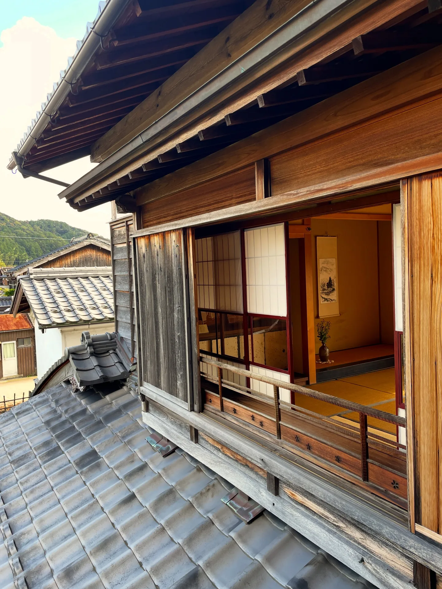
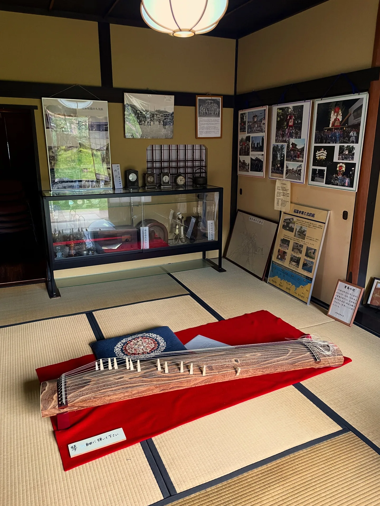
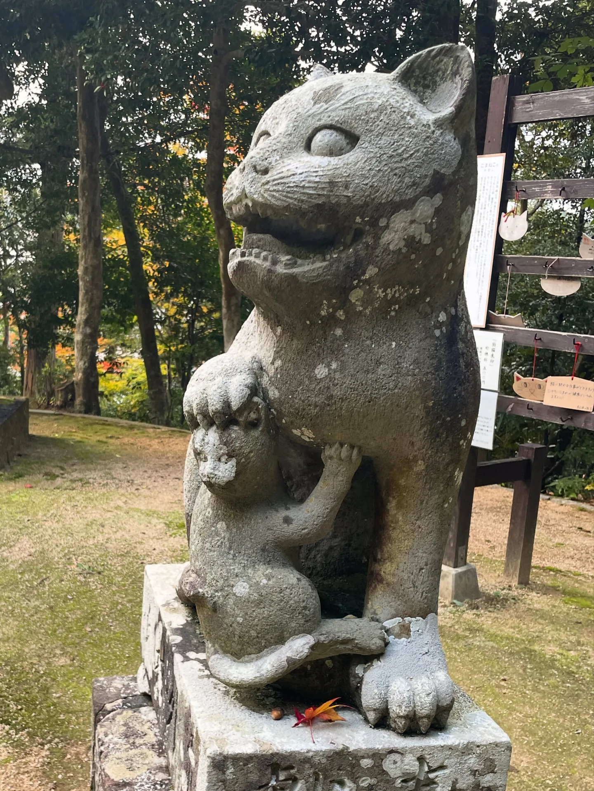

京丹後的一日旅遊：久美濱、網野、峰山
京丹後地區一日或半日的旅遊紀錄，依車站分成三個區域。
久美濱車站：豪商稻葉本家與如意寺
我住在久美濱灣的狹窄沙洲，這裡最近的超市就位於正南方對岸的車站區域。
景點一是「豪商稻葉本家」，就是一戶有錢人家的家，不超特別但也不算無聊。印象深刻的是兩個展示物：一個是迎娶新娘的轎子（嫁入り籠），可以坐坐看，超小超窄，只能抱著膝蓋或跪坐，就算是以前日本女子身高只有 140–145 公分，也還是只能這樣坐！還有一個可以自由彈奏的日本古箏，第一次看到這種的！！



景點二是如意寺，花草樹木整理得很好，很靜心，離開時門口正對著久美濱灣，美到最後一刻。

網野車站
上午出門，搭車到網野車站，散步 40–50 分鐘到藤原鮮魚店 uRashiMa 吃披薩當作午餐，再徒步 1 小時前往琴引濱。
藤原鮮魚店 uRashiMa
我自己去了網野這家披薩店「藤原鮮魚店 uRashiMa」，店主2012年得過「拿坡里披薩奧林匹克大賽（Pizza Olympic）」Fantasia（創意/幻想）組的銀牌。
店頭小小的，大約 5–6 個位置，當天有人訂位，但我運氣很好坐到了剩下的一個位置。披薩的選項很多，除了經典口味之外，也有一些品項是使用當地食材與海鮮的原創披薩，披薩口味可以點雙拼，一個人也可以吃到兩種口味超棒的！

開胃菜拼盤很豐富，好像上桌前最後都淋了橄欖油之類的（忘了），雖然每一道味道都不同、但好幾樣都吃到相同的油油的口感，覺得有點……干擾？特別印象深刻的其中一個開胃菜，是裹糖衣的炸地瓜碎片，超像台灣超市可以買到的「勇伯地瓜酥」。（我後來還特別帶地瓜酥來給日本人吃吃看，對他們來說也是沒吃過的口感的地瓜零食）

整體而言，沒有到超級超級驚艷，但絕對是好吃的，而且也不是那麼傳統、經典可想像，都帶有一種變奏感，滿推薦的！
我一個人吃了 5,000 日圓左右（披薩＋開胃拼盤＋軟飲料），有點痛……哈哈哈
備忘
- 藤原鮮魚店 uRashiMa：11:30–19:00，休週四，其他休日詳 IG。披薩 2,500 日圓上下。
- 網野車站步行 40 分鐘，或搭公車 4 分鐘＋步行 20 分鐘…
- @
琴引濱
琴引濱，也就是會唱歌的海灘，是日本著名的國家指定天然紀念物與名勝，草莓農場主人的太太聽聞我接續要來京丹後時就有提到。應該是挺有名的吧？為什麼遊客只有小貓兩三隻呢...？
從 uRashiMa 徒步 1 小時前往海邊（不推薦，好累哦 XD）。途中有在牧場經營的冰淇淋店休息一下（冰淇淋普通……京丹後區域我最推薦同樣是牧場起家、而且最知名的「Sora」）。
海邊風超大，沙子隨風飛揚，沒什麼人、怪可怕的。停下來仔細觀察，真的可以聽到明顯沙子碰撞的沙沙聲音，說是因為沙子含有 75% 石英的緣故，摩擦會發出聲音；而且沙子打到身上、打在鏡頭上超級有感。
查資料時才發現，同一個位置附近還有個區域叫「太鼓濱」，據說用力踏步時與岩盤共振，會傳出如同打太鼓般「咚咚」聲。（我當時不知道所以沒去，只能說是「據說」～）
我在 Google Map 上發現一個足湯（Open-Air-Bath）的地標，大約在露營地的下方、木棧樓梯旁。水泥造的人工池子，大約只有 1 坪，看起來很陽春、沒什麼特別，但可以泡著腳看著海景，就是最特別的了！可以取得「一邊看海一邊泡湯」的成就，太酷辣～
抵達時有三個定居日本的中年外國人正泡著腳，他們說這個足湯點只有當地人知道。回程時，我在走去公車站的路上摘了路邊的柿子，搭了約 15 分鐘的公車回到網野車站，好快啊哈哈！
備忘
- 從網野車站搭巴士約 15 分鐘，再步行 10 分鐘即可抵達。
- 冬天不開放；7–8 月開放穿著泳衣泡湯，其餘春、秋季則是僅開放足湯。
峰山車站：社區咖啡館、金刀比羅神社與狛猫
峰山是京丹後市生活機能最集中的地方。我在午後前往，先去了「まちまち案内所」，一個像社區咖啡館、供大家交流的地方。空間很大，以前是木材行，我主要是對於由民間發起的「みんなの図書館」的模式很感興趣，因為各店家規劃、執行上多有不同，有空就會造訪看看不同案例。
我先繞了一圈之後，原本還想去地方創生基地「Roots（京丹後市未來挑戰交流中心）」，但這個空間很大一部分是服務高中生，導致我在門前晃了三次都不敢走進去……！（好後悔！半年後再來，我還是沒去 QQ）
接續前往金刀比羅神社，在附近吃了章魚燒，然後去看看日本唯一的「狛猫」石像。最後決定回去まちまち案内所吃個早一點的晚餐再離開，於是和出餐的店員聊起了天，聊了很多料理的事，聊了我不敢走進 Roots、以及店內「一箱本棚オーナー制度」等等。對方告訴我，規劃這個制度的人某一天會來。

數天之後，我又來了第二次，這次發生了一件意外的事，寫在另一篇：〈打工換宿的支線事件：和日本人一起做菜，給日本人吃〉。
延伸閱讀：〈日本打工度假的一年：出發前的準備、支出花費，和不打工的生活方式〉（2026-08-31）
關鍵字京丹後久美濱網野峰山琴引濱豪商稻葉本家如意寺披薩藤原鮮魚店uRashiMa金刀比羅神社狛猫足湯まちまち案内所
留言
電子郵件不會公開，只用來辨識留言者。第一次留言會先經過審核，之後同一個電子郵件的留言會直接顯示。本留言區以 Cloudflare Turnstile 防止垃圾留言。